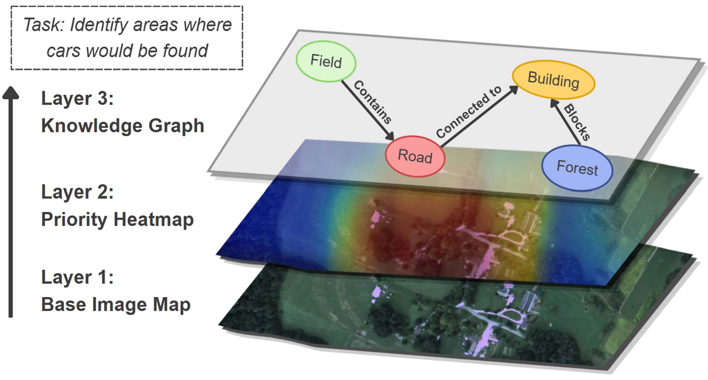
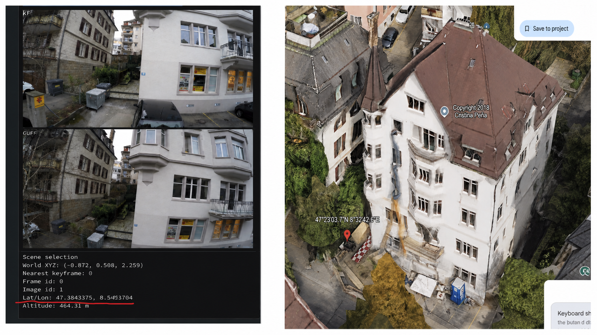
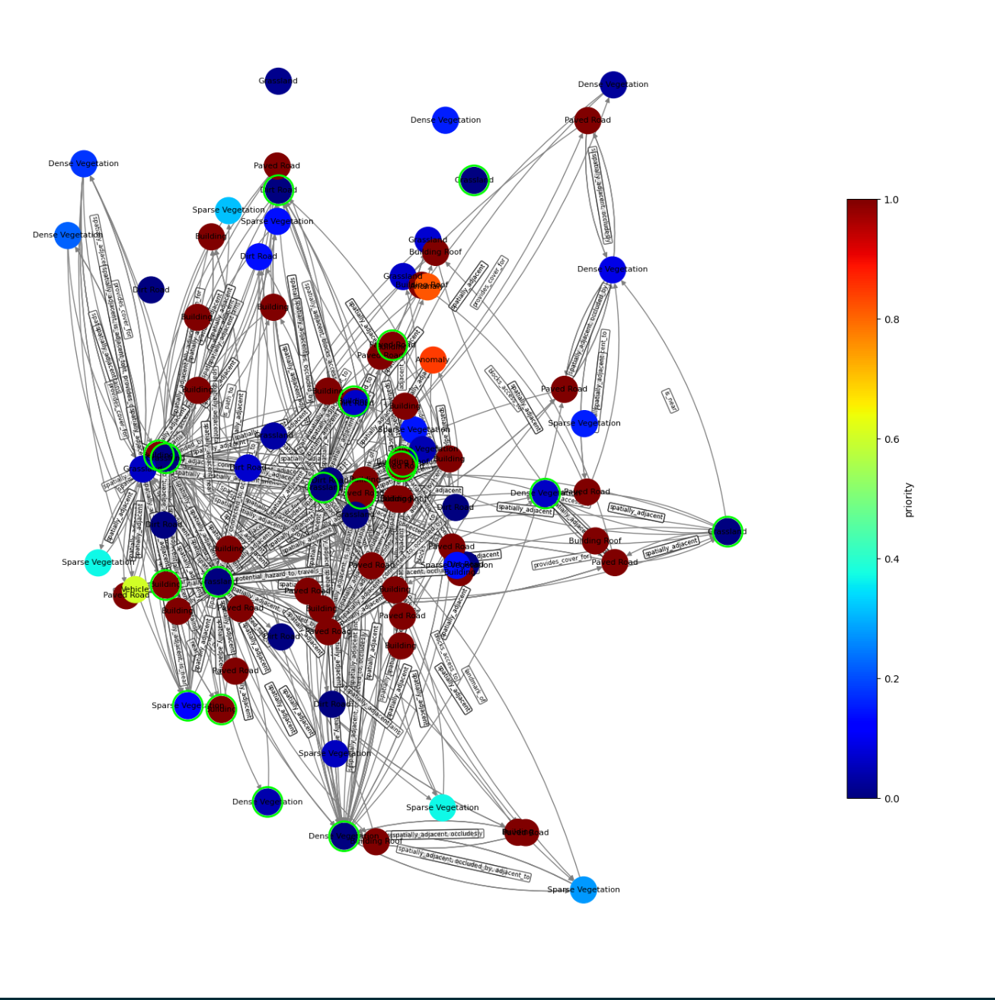
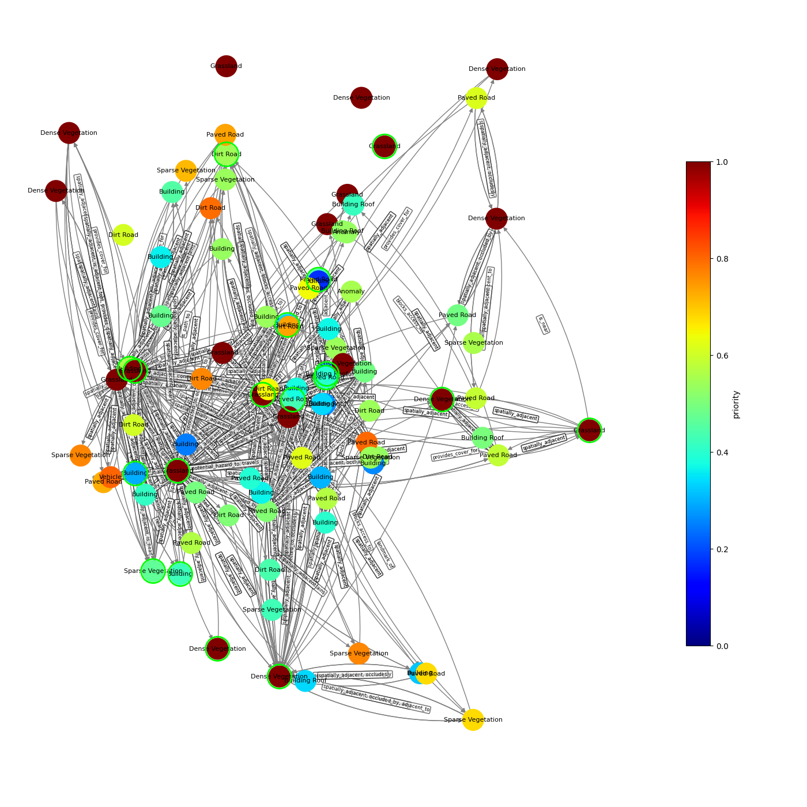
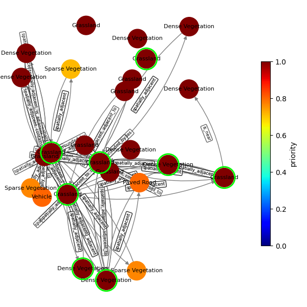
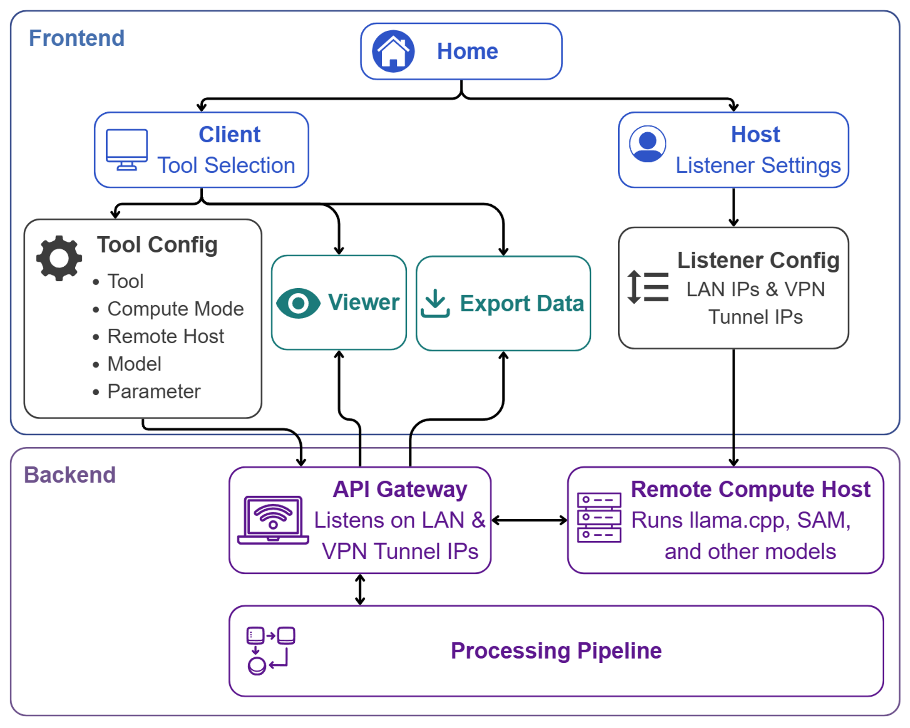

Hierarchical Scene Comprehension
Combine visual cues with contextual relationships. This layered approach identifies where cars are likely to appear by reasoning across the full scene.

Georeferencing Capabilities
If provided, latitude and longitude data allow the reconstructed 3D scene to be georeferenced in Google Earth.

Finger-Painting Video Demo
Demo of the finger-painting scene showing the knowledge graph updating as priorities are reassigned.
Scene Chat
Demo of using natural-language questions to interact with and retrieve information from the reconstructed scene.
Knowledge Graph Construction
Middle: creation of unclustered global knowledge graph. Green rings reflect new nodes
Right: clustered knowledge graph. Magenta rings reflect creation of clustered nodes
Knowledge Graph Search Examples
Edges represent spatial, temporal, and semantic (VLM-inferred) relationships between nodes. Nodes with lime-green outline represent clustered nodes, where similar and redundant nodes are merged into higher-level summary nodes.
Query-agnostic pass of the scene

"Find areas where I can shop for something"

"Find areas where I can find wild animals"

Top nodes relevant to animal search prompt

User Interface Architecture
